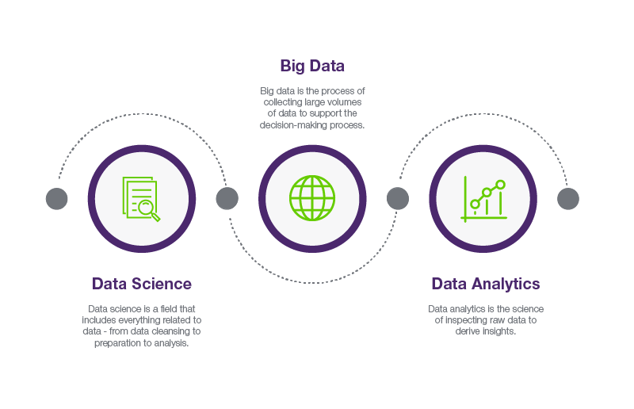
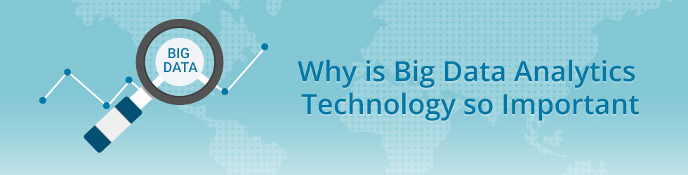
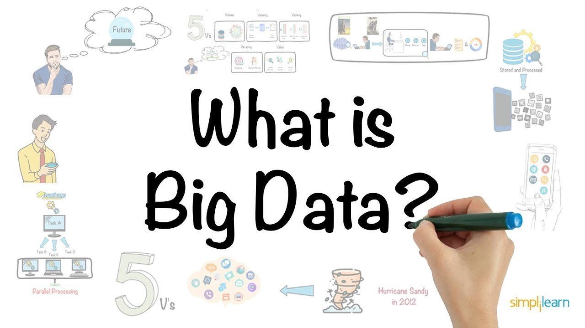
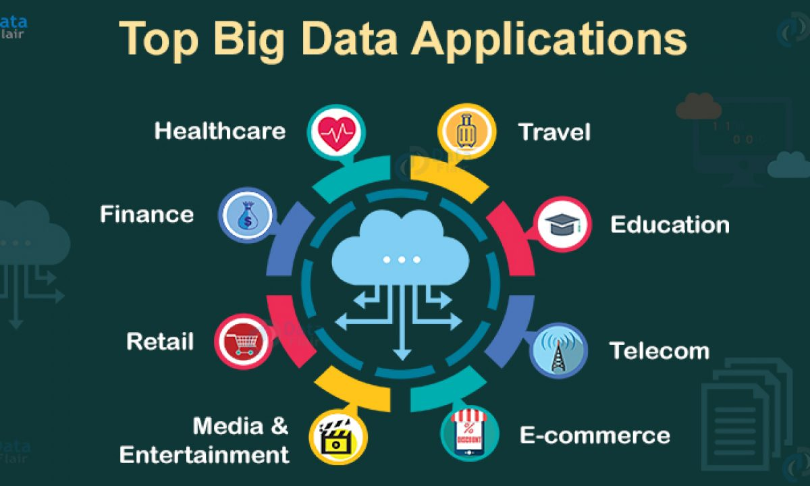
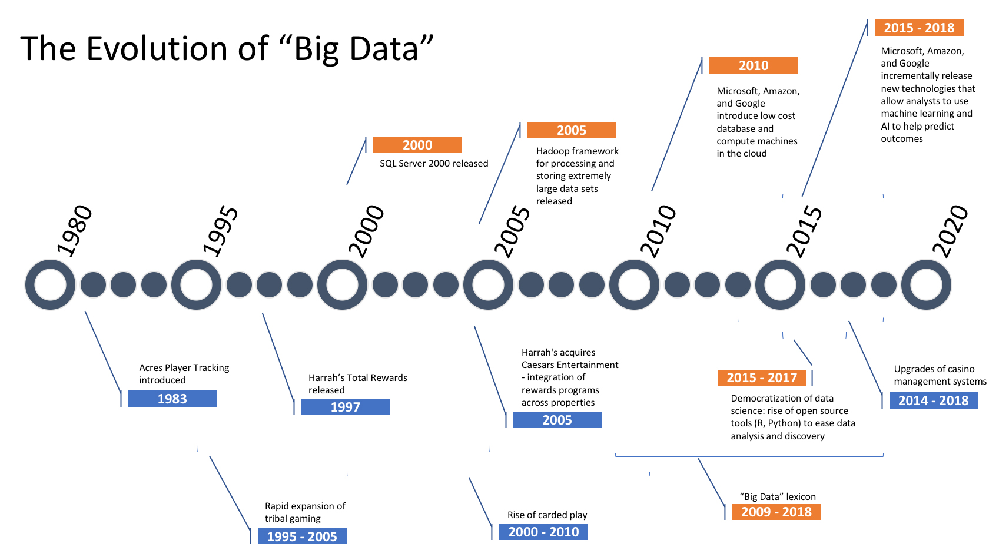
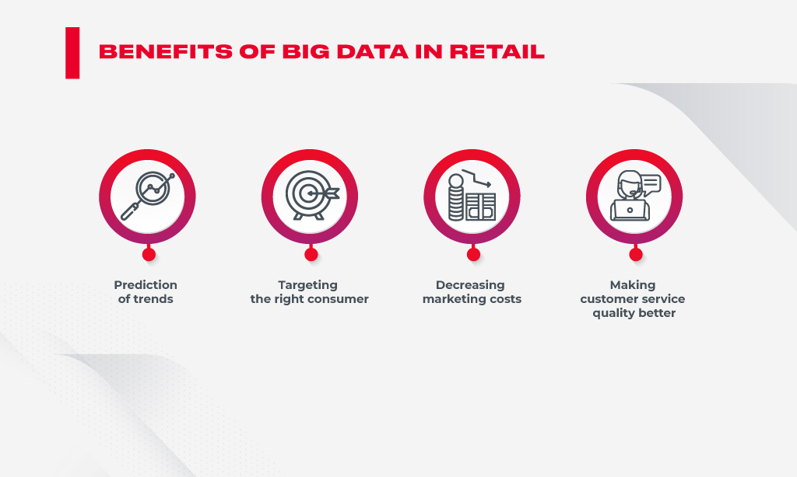
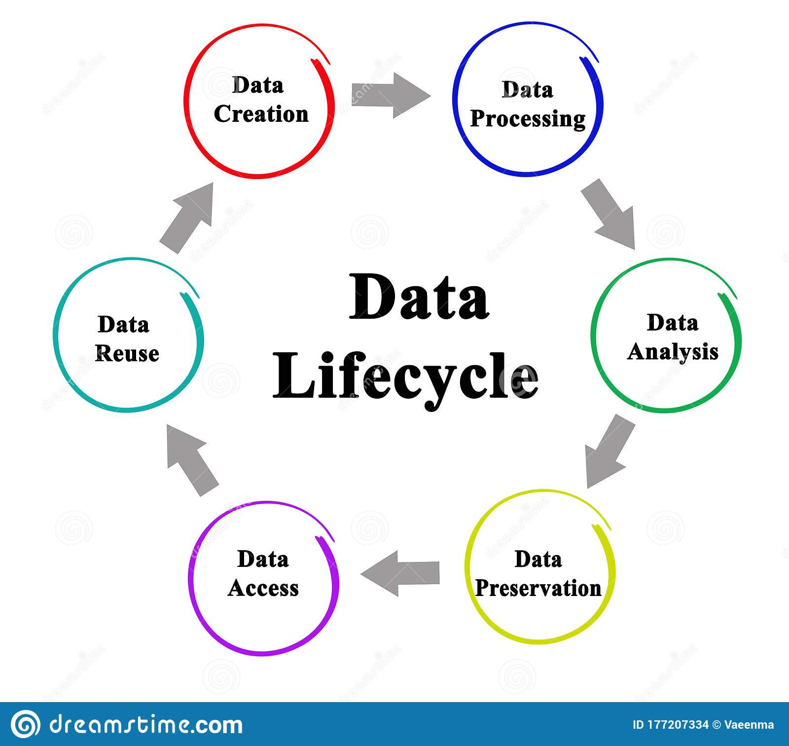

Big Data

Big data is a term used to describe extremely large sets of data
that can be analyzed to reveal patterns, trends, and associations.
With the explosion of digital information in recent years, big data
has become increasingly prevalent in virtually every aspect of
modern society, from business and government to healthcare and
education. One of the key characteristics of big data is its size.
Traditional data management tools and methods are often inadequate
for dealing with the massive amounts of data generated by modern
technology. Big data requires sophisticated tools and techniques for
data storage, retrieval, and analysis, including distributed
computing, data mining, and machine learning. Another important
characteristic of big data is its diversity. Big data comes from a
wide range of sources, including social media, mobile devices,
sensors, and other digital technologies. This diverse range of data
types presents unique challenges for data analysis, as different
types of data require different analytical methods. Despite the
challenges, big data has the potential to transform virtually every
industry. In the business world, big data can be used to gain
insights into consumer behavior and preferences, enabling companies
to make better decisions about product development, marketing, and
customer service. In healthcare, big data can be used to develop
personalized treatment plans based on individual patient data,
improving patient outcomes and reducing healthcare costs. Big data
can also be used to address some of the world's most pressing
problems. For example, big data can be used to predict and prevent
natural disasters, improve urban planning and transportation
systems, and monitor and respond to climate change. However, there
are also concerns about the ethical implications of big data. The
collection and analysis of large amounts of data can raise privacy
concerns, as individuals may not be aware of the data that is being
collected about them or how it is being used. There are also
concerns about the potential for bias in big data analysis, which
could lead to unfair or discriminatory outcomes. In conclusion, big
data has the potential to transform virtually every aspect of modern
society, from business and healthcare to education and social
policy. However, the challenges of managing and analyzing large and
diverse sets of data must be addressed, and ethical considerations
must be taken into account to ensure that the benefits of big data
are realized in a responsible and ethical manner.
What is Big Data Analytics?

Big Data analytics is a process used to extract meaningful insights,
such as hidden patterns, unknown correlations, market trends, and customer preferences.
Big Data analytics provides various advantages—it can be used for better decision making,
preventing fraudulent activities, among other things.
Why is big data analytics important?

In today’s world, Big Data analytics is fueling everything we do online—in every industry.
Take the music streaming platform Spotify for example. The company has nearly 96 million users that generate a tremendous amount of data every day. Through this information, the cloud-based platform automatically generates suggested songs—through a smart recommendation engine—based on likes, shares, search history, and more. What enables this is the techniques, tools, and frameworks that are a result of Big Data analytics.
If you are a Spotify user, then you must have come across the top recommendation section, which is based on your likes, past history, and other things. Utilizing a recommendation engine that leverages data filtering tools that collect data and then filter it using algorithms works. This is what Spotify does.
But, let’s get back to the basics first.
What is Big Data?

Big Data is a massive amount of data sets that cannot be stored, processed, or analyzed using traditional tools.
Today, there are millions of data sources that generate data at a very rapid rate. These data sources are present across the world. Some of the largest sources of data are social media platforms and networks. Let’s use Facebook as an example—it generates more than 500 terabytes of data every day. This data includes pictures, videos, messages, and more.
Data also exists in different formats, like structured data, semi-structured data, and unstructured data. For example, in a regular Excel sheet, data is classified as structured data—with a definite format. In contrast, emails fall under semi-structured, and your pictures and videos fall under unstructured data. All this data combined makes up Big Data.
Let’s look into the four advantages of Big Data analytics.
Also Read: Data Science vs. Big Data vs. Data Analytics
Uses and Examples of Big Data Analytics

There are many different ways that Big Data analytics can be used in order to improve businesses and organizations. Here are some examples:
Using analytics to understand customer behavior in order to optimize the customer experience
Predicting future trends in order to make better business decisions
Improving marketing campaigns by understanding what works and what doesn't
Increasing operational efficiency by understanding where bottlenecks are and how to fix them
Detecting fraud and other forms of misuse sooner
These are just a few examples — the possibilities are really endless when it comes to Big Data analytics. It all depends on how you want to use it in order to improve your business.
History of Big Data Analytics

The history of Big Data analytics can be traced back to the early days of computing, when organizations first began using computers to store and analyze large amounts of data. However, it was not until the late 1990s and early 2000s that Big Data analytics really began to take off, as organizations increasingly turned to computers to help them make sense of the rapidly growing volumes of data being generated by their businesses.
Today, Big Data analytics has become an essential tool for organizations of all sizes across a wide range of industries. By harnessing the power of Big Data, organizations are able to gain insights into their customers, their businesses, and the world around them that were simply not possible before.
As the field of Big Data analytics continues to evolve, we can expect to see even more amazing and transformative applications of this technology in the years to come.
Read More: Fascinated by Data Science, software alum Aditya Shivam wanted to look for new possibilities of learning and then gradually transitioning in to the data field. Read about Shivam’s journey with our Big Data Engineer Master’s Program, in his Simplilearn Big Data Engineer Review.
Benefits and Advantages of Big Data Analytics

1. Risk Management
Use Case: Banco de Oro, a Phillippine banking company, uses Big Data analytics to identify fraudulent activities and discrepancies. The organization leverages it to narrow down a list of suspects or root causes of problems.2. Product Development and Innovations
Use Case: Rolls-Royce, one of the largest manufacturers of jet engines for airlines and armed forces across the globe, uses Big Data analytics to analyze how efficient the engine designs are and if there is any need for improvements.3. Quicker and Better Decision Making Within Organizations
Use Case: Starbucks uses Big Data analytics to make strategic decisions. For example, the company leverages it to decide if a particular location would be suitable for a new outlet or not. They will analyze several different factors, such as population, demographics, accessibility of the location, and more.4. Improve Customer Experience
Use Case: Delta Air Lines uses Big Data analysis to improve customer experiences. They monitor tweets to find out their customers’ experience regarding their journeys, delays, and so on. The airline identifies negative tweets and does what’s necessary to remedy the situation. By publicly addressing these issues and offering solutions, it helps the airline build good customer relations.The Lifecycle Phases of Big Data Analytics

Now, let’s review how Big Data analytics works:
Stage 1 - Business case evaluation - The Big Data analytics lifecycle begins with a business case, which defines the reason and goal behind the analysis.
Stage 2 - Identification of data - Here, a broad variety of data sources are identified.
Stage 3 - Data filtering - All of the identified data from the previous stage is filtered here to remove corrupt data.
Stage 4 - Data extraction - Data that is not compatible with the tool is extracted and then transformed into a compatible form.
Stage 5 - Data aggregation - In this stage, data with the same fields across different datasets are integrated.
Stage 6 - Data analysis - Data is evaluated using analytical and statistical tools to discover useful information.
Stage 7 - Visualization of data - With tools like Tableau, Power BI, and QlikView, Big Data analysts can produce graphic visualizations of the analysis.
Stage 8 - Final analysis result - This is the last step of the Big Data analytics lifecycle, where the final results of the analysis are made available to business stakeholders who will take action.